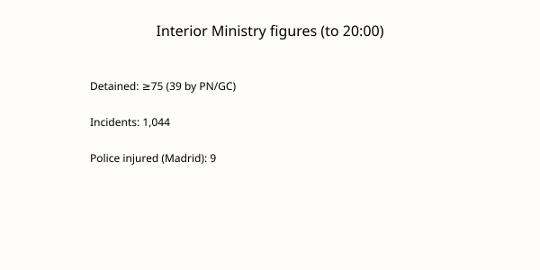

España · huelga · 12 de noviembre de 2026
La huelga general del 11N deja al menos 75 detenidos y más de 1.000 incidencias según Interior.

Lo que coinciden los medios
Los sindicatos UGT y CCOO convocaron una huelga general de 24 horas el 11 de noviembre de 2026, la primera conjunta desde 2012, bajo el lema de salarios, vivienda y precios. El Ministerio del Interior informó de al menos 75 detenidos y 1.044 incidencias en todo el país: cortes de carreteras, intentos de bloqueo en accesos a empresas, quemas de contenedores, daños en comercios y mobiliario urbano, y resistencia a la autoridad. Entre las 22.00 del día anterior y las 20.00 del 11 de noviembre, Policía Nacional y Guardia Civil realizaron 39 detenciones, la mayoría en Madrid (15). Se registraron cargas policiales especialmente en Madrid y Barcelona; en la capital nueve policías resultaron heridos. El seguimiento fue desigual por comunidades; los sindicatos hablaron de éxito y de millones de participantes, mientras la CEOE, el PP y Vox lo calificaron de fracaso. Rodalies avisó de posibles demoras el jueves por lluvias y por las afectaciones operativas de la huelga.
Lo que es solo una cita
Las declaraciones de los sindicatos sobre el “éxito” y las de Feijóo sobre el “fracaso” son valoraciones políticas. No son mediciones de participación certificadas por una autoridad estadística independiente. Las cifras de millones de huelguistas son estimaciones sindicales; el Ministerio no ha publicado un porcentaje de seguimiento equiparable al de una huelga con servicios mínimos detallados en todos los sectores. Las imágenes de cargas que “no han gustado” son comentarios de responsables gubernamentales, no un informe de la Fiscalía.
Mecanismo que el lector necesita
Una huelga general en España se convoca por los sindicatos mayoritarios y se desarrolla con servicios mínimos fijados por la autoridad laboral. El impacto se mide por interrupciones en transporte, puertos, industria y comercio, no por un censo único de participantes. Las incidencias registradas por Interior son actos que las fuerzas de seguridad tipifican (cortes, daños, resistencia); no equivalen al número de personas que secundaron el paro. El contexto político es el adelanto electoral al 29 de noviembre y la crisis de vivienda: el Banco de España ha citado un déficit de unas 750.000 viviendas. Esa cifra es un diagnóstico macroeconómico previo; no es el resultado de la huelga del 11N. Las comunidades autónomas tienen competencias en vivienda y en orden público local, lo que explica la variación regional del seguimiento y de la respuesta policial.
La fotografía superior es del Palacio de Cibeles. No muestra ninguna manifestación, piquete o carga del 11 de noviembre. Es un still de localización de Madrid, no un documento del evento.
Lo que esta noticia no es
No es un balance final de participación económica. No es una sentencia sobre la legalidad de cada detención. No es una predicción del resultado electoral del 29 de noviembre. Las 75 detenciones y las 1.044 incidencias son los números que Interior ha hecho públicos hasta la hora indicada; el resto son estimaciones o valoraciones.

Artículos fuente y puntuaciones
| Medio | Titular | T | N | C |
|---|---|---|---|---|
| El Periódico | Última hora de la huelga general 11N, en directo | 95 | -5 | 95 |
| laSexta | Huelga general del 11 de noviembre, en directo | 94 | -5 | 90 |
| Antena 3 | Noticias hoy, jueves 12 de noviembre de 2026 | 93 | 0 | 92 |
Imágenes: Wikimedia Commons fotografía de tipo del Palacio de Cibeles vía Special:FilePath. El pie indica que no es una imagen del evento. onerror al SVG local. Gráfico original SVG a partir de cifras oficiales. No se usan pixels de agencias como src único.